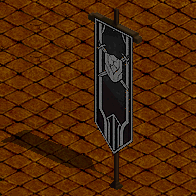
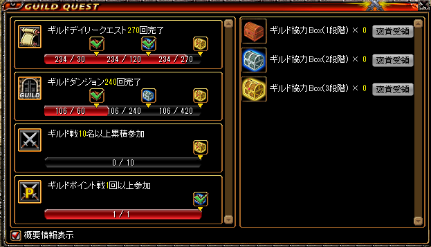
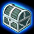
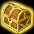
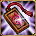

ギルド旗＆ギルドウィークリークエスト
ギルド協力ボックス 報酬一覧
ギルド旗 効果一覧
ギルド旗要求 一覧
ギルドホール内に設置されている旗をクリックすることで、「経験値アップ」や「敵の全抵抗弱化」などの恩恵を受けられます。
ギルド旗を成長させることで、累計消費ポイントに応じたギルド協力BOXを得ることもできます。
ギルドポイントはギルドデイリークエストやウィークリークエスト、ギルドダンジョンを完了することで獲得可能です。
ギルド旗ウィークリークエストはギルドタブ(F7)より確認できます。

※毎週水曜日朝6時に獲得ポイントのカウントはリセットされます。
※[報酬受領]をクリックすることでギルド協力BOXを入手可能。
※各数値はギルドメインバー全員の合計値です。
※そのため、ギルドポイント戦はギルドで1回以上参加すれば報酬が手に入ります。
ギルド協力ボックス 報酬一覧
| ギルド協力ボックス（1段階） |  | ギルド協力ボックス（2段階） |  | ギルド協力ボックス（3段階） | |
|---|---|---|---|---|---|
 |
経験値スクロール（下級）1個 | |
経験値スクロール（中級）1個 | |
経験値スクロール（上級）1個 |
|
経験値スクロール（中級）1個 | |
経験値スクロール（上級）1個、 | ランディスクッキー 20個 | |
|
経験値スクロール（上級）1個 | ランディスのクッキー 15個 |  |
サンベリー 1個(有効期限なし) | |
| ランディスのクッキー 10個 | |
サンベリー 1個(有効期限なし) |  |
熟したサンベリー 1個(有効期限なし) | |
|
サンベリー 1個(有効期限なし) | |
熟したサンベリー 1個(有効期限なし) |  |
ペブルコクーン 1つ |
|
熟したサンベリー 1個(有効期限なし) | |
ペブルコクーン 1つ |  | ジョンマルコのお守り 1個 |
|
ペブルコクーン 1つ | ジョンマルコのお守り 1個 |  |
奇妙な紫苑の壺 1個 | |
| - | - |  |
異界の強化石 5個 | |
異界の強化石 5個 |
| - | - | - | - |  |
不思議な紺碧の壺 1個 |
ギルド旗 効果一覧
| 支援バフ | Lv 1 | Lv 2 | Lv 3 | Lv 4 | Lv 5 |
|---|---|---|---|---|---|
| 経験値増加（％） | 5 | 10 | 15 | 20 | 25 |
| アイテムドロップ率増加（％） | 5 | 10 | 15 | 20 | 25 |
| ユニークアイテムドロップ率増加（％） | 20 | 40 | 60 | 80 | 100 |
| DXユニークアイテムドロップ率増加（％） | 10 | 20 | 30 | 40 | 50 |
| 移動速度増加（％） | 95 | 110 | 125 | 140 | 155 |
| 攻撃バフ | Lv 1 | Lv 2 | Lv 3 | Lv 4 | Lv 5 |
| 物理攻撃力増加（％） | 30 | 35 | 40 | 45 | 50 |
| 魔法攻撃力増加（％） | 25 | 29 | 33 | 37 | 41 |
| 攻撃速度増加（％） | 35 | 40 | 45 | 50 | 55 |
| ターゲットの全属性抵抗低下（％） | 20 | 23 | 26 | 29 | 32 |
| 追加火属性ダメージ | 700 | 800 | 900 | 1000 | 1100 |
| 防御バフ | Lv 1 | Lv 2 | Lv 3 | Lv 4 | Lv 5 |
| 防御力増加（％） | 240 | 280 | 320 | 360 | 400 |
| HP自動回復速度増加（毎秒+） | 21 | 25 | 29 | 33 | 37 |
| 回避率増加（％） | 13 | 15 | 17 | 19 | 21 |
| 最大HP増加（％） | 120 | 140 | 160 | 180 | 200 |
| 魔法属性抵抗増加（％） | 5 | 10 | 15 | 20 | 25 |
| アイテム補給 | Lv 1 | Lv 2 | Lv 3 | - | - |
| ギルド協力BOX(段階) | 1 | 2 | 3 | - | - |
旗を成長させるには「ギルドポイント」が必要になります。
※ギルドマスターのみがポイントを割り振ることができます。
各効果は60分。
有効時間中に再度クリックしても、バフ時間の上書き延長不可。
ログアウト/CCするとバフが解除されます。
※キャラクター・召喚獣の両方に適用されます。
「ターゲットの全属性抵抗低下（％）」は抵抗弱化の120%上限とは別枠で計算されます。
一部スキルは各種支援スキルで上書きされることがあります。
ギルド旗要求ポイント
| 支援バフ | Lv 1 | Lv 2 | Lv 3 | Lv 4 | Lv 5 |
|---|---|---|---|---|---|
| 各種バフ(消費pt) | 2000 | 4000 | 6000 | 8000 | 10000 |
| アイテム補給(使用pt累計) | 30000 | 60000 | 90000 |
例えば、ギルドマスターが各種バフにポイントを割り振ることでポイントを消費し、累計が30000に達するとアイテム補給Lv1が取得可能です。
[参考][公式]Ver0.0703アップデート、新規追加内容をご紹介！